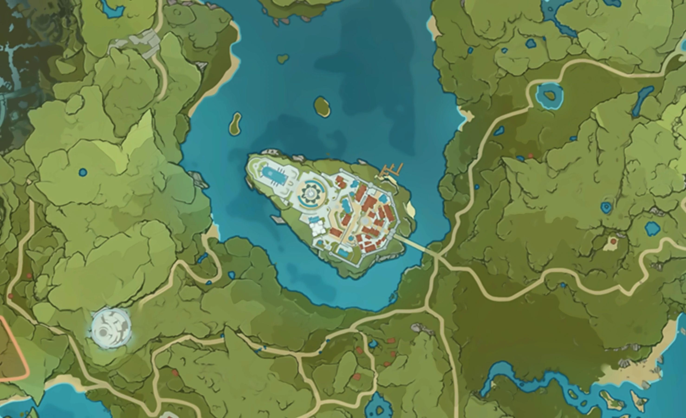

지도 위에
별지 한 장.
원신 PC 큰 지도와 미니맵 위에 자원 위치를 바로 띄워 주는 무료 앱. 웹 지도를 따로 열지 않아도 돼요.
Windows용 내려받기무료 · Windows 10/11 64비트 · HoYoverse와 무관한 팬 프로젝트
몬드성 주변 지도에 Byeolji 데이터로 워프 포인트, 일곱신상, 민들레 씨앗, 풍차 국화 등 144곳을 앱과 같은 방식으로 찍은 모습.
범례
 큰 지도를 열면
큰 지도를 열면- 지도(M)를 열고 끌고 확대해도 화면을 알아보고 마커가 따라와요. 지하 층도, 패드로 조작할 때도 알아봐요.
- 걸어 다닐 땐 미니맵에
- 미니맵 원 안에도 가까운 자원이 떠요. 지도를 다시 열 필요가 없어요.
- 모은 곳은 흐리게
- 마커를 Ctrl+클릭하면 획득 표시. 로그인하면 여러 PC에서 기록이 맞춰져요(로그인은 선택).
| F7 | 자원 고르는 패널 열기·닫기 |
|---|---|
| F8 | 위치 다시 찾기 |
| F10 | 진단 화면 |
설치할 때 뜨는 경고
크롬이나 Windows가 "위험할 수 있다"고 한두 번 경고해요. 바이러스가 있어서가 아니라, 개인이 만든 무료 프로그램이라 아직 코드 서명(제작자 확인 도장)이 없고, 새 버전이 나올 때마다 받은 사람 수가 0부터 다시 세어지기 때문이에요. 설치 파일은 꼭 이 페이지의 내려받기 버튼(GitHub)에서만 받아 주세요.
-
크롬이 막으면 "유지"
오른쪽 위 다운로드 아이콘을 눌러 "유지"나 "계속"을 눌러요. 안 보이면 주소창에
chrome://downloads. -
파란 창은 "추가 정보" → "실행"
처음엔 실행 버튼이 숨어 있어요. "추가 정보"를 누르면 나타나요.
-
관리자 권한은 "예"
원신이 관리자 권한으로 돌아가서, 같은 권한이어야 게임 위에서 단축키와 마우스가 먹혀요.
만든 사람
원신 좋아하는 대학생이에요. 자원 찾을 때마다 게임 밖으로 나갔다 들어오는 게 너무 귀찮아서 만들었어요. 버그나 건의는 메일로 편하게 보내 주세요.